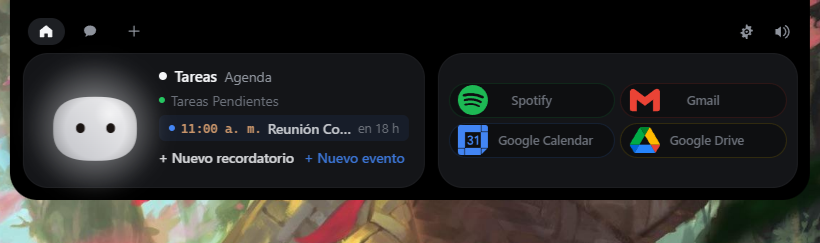

Tu música, tu agenda, tus recordatorios, tu correo y tus herramientas — flotando sobre tu escritorio, con un compañero que vive ahí. No es una barra que decora: es tu centro de mando.

Coso reúne en una sola isla lo que hoy te obliga a abrir diez ventanas. Y no se queda en lectura: controla, avisa y responde.
Control completo de tu reproductor sin cambiar de ventana: cola de reproducción, siguiente, anterior, pausa. Tu música va con la isla, no al revés.
Tus próximos eventos en la tarjeta, cuenta atrás en vivo y un aviso 10 minutos antes de que empiece. Conectar con Google es un solo botón.
Crea recordatorios desde la isla y recíbelos con notificación cuando toque — con etiquetas especiales para lo que no puede fallar, como el gimnasio.
Tu bandeja de entrada como píldora: avisos de lo importante sin abrir el navegador.
Conversa con la IA desde la isla y dicta sin manos: entrada de voz 100% offline que arranca con un atajo y envía sola al soltar.
Sesiones de Claude Code y OpenCode aparecen en la isla con sus pilas propias: qué está haciendo, en vivo, mientras sigues con otra cosa.
GitHub, Vercel, n8n, Notion, Cal.com, Stripe y Resend: cada uno con su píldora de color y sus datos al día.
Suelta un archivo sobre la isla y deja que Coso lo tome. Sin exploradores de archivos ni pasos de más.
Global, configurable y con detección de conflictos: abre, salta y cambia de píldora sin soltar el teclado.
Tu personaje te recibe al arrancar, sigue el cursor, reacciona a tus clics y celebra cuando algo termina. La isla no está viva… pero se lo parece.
Elige qué aparece junto a Coso en modo normal; en modo desarrollador, abre todo el catálogo. Cuatro píldoras visibles, ordenadas como tú quieras.
Cero servidores, cero telemetría, cero cuentas. Las claves viven en el Administrador de credenciales de Windows y tus datos en tu PC. Nada sale de ahí.
El catálogo completo, hoy. Y crece: cada integración nueva se suma a la misma fila.
Las islas bonitas solo existen en vídeos. Esta hace cosas: reproduce, salta de tema, te cuenta qué hora es tu reunión, te recuerda el gimnasio y te deja hablarle sin teclado.
Coso no tiene cuenta, ni nube, ni rastreadores. Las claves de todos tus servicios se guardan en el Administrador de credenciales de Windows —el mismo que usa el sistema— y la app solo habla con los servicios que tú conectas.
Si mañana desconectas todo, Coso sigue siendo tuya y sigue funcionando en local.